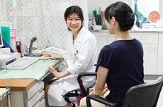

救急科 ／ 脳神経外科 ／ 整形外科 ／ 消化器外科
内科 ／ 産科・婦人科 ／ 泌尿器科 ／ 麻酔科
健診部門 ／ リハビリテーション科 ／ 透析室
救急科
|
調布市唯一の指定二次医療機関として、救急初療を担当しています。トリアージナース制度を導入しております。 |
脳神経外科
|
脳神経疾患の総合診療科です。一般的な頭部外傷などの救急対応、ＭＲＩ、ＣＴなどの画像診断、外科的および非外科的治療、長期予後管理と、神経系の病気を一貫して診療しております。 |
整形外科
 |
骨折・打撲・ねん挫などの一般外傷のほか、関節リウマチ・痛風などの代謝性疾患に対して加療を行っています。また、高齢化に伴う変形性関節症、骨粗鬆症、変形性脊椎症、脊椎管狭窄症などの様々な運動器疾患に対しても骨密度測定装置やＣＴ、ＭＲＩなどの画像検査を用いて、専門的な治療を提供しております。 |
消化器外科
|
当科では、胃腸炎や潰瘍などの内科的な診療及び鼠径ヘルニア（脱腸）・胃癌・大腸癌・胆石症などの手術を含めた外科的な診療を総合的に行っております。 |
内科
|  |
外来は、専門性を強調せずに幅広い内科診療を担当する一般内科外来と専門領域の患者様のみを対象とした専門外来（循環器・糖尿・腎臓・神経内科）を組み合わせ、地域のニーズにあった診療を提供しています。 |
産科・婦人科
 ←産科・婦人科の特設ページができました。
←産科・婦人科の特設ページができました。
|
女性スタッフによる女性のための診療科 |
 |
|
あなたらしいお産のために |
|
健診部門
|
日帰りドックをはじめ、女性スタッフによるレディースドック（子宮がん・乳がん・卵巣腫瘍）、ＭＲＩによる脳ドックに力を入れ、病気の早期発見・早期治療を目指しています。 |
リハビリテーション科
|
主に整形外科（運動器）や脳神経外科（脳血管疾患等）の急性期リハビリを行っています。理学療法士が主治医の指示の下、主に身体能力の回復を目的とし、家庭復帰のための住宅改修アドバイスなどもしております。また、併設老人保健施設へのスムーズなリハビリ連携や、住宅での訪問リハビリにも力を入れております。 |
透析室
|
調布病院の透析室は、３５年以上の歴史を持つ三多摩地区でも有数の透析室です。当室では透析治療に精通した医師と高い透析技術を持つ看護師・臨床工学技師とのチームワークで家庭的な暖かい雰囲気で外来透析・入院透析を行っております。従って不慣れな患者様でも高齢の患者様でも安心して治療が受けられます。また、当室では透析のモデル食として、毎回昼食を無償で提供すると共に調布駅・京王多摩川駅からの送迎も行っております。 |